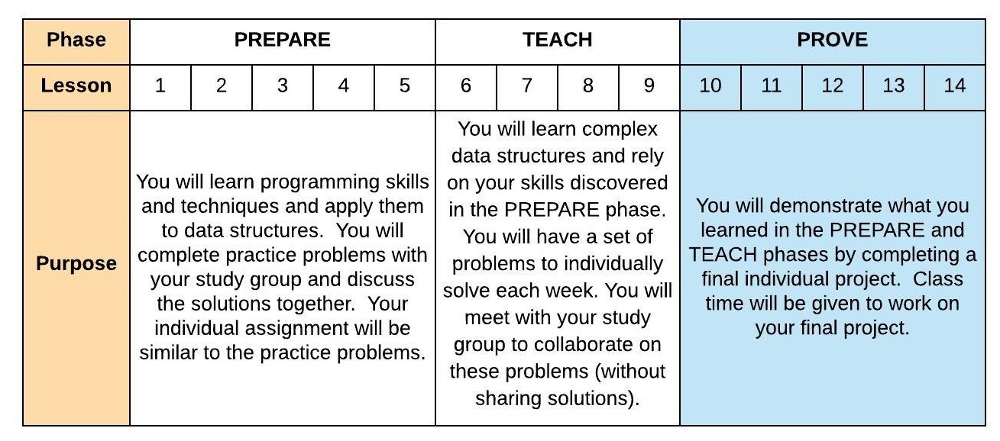

10 Prepare: Introduction to Final Project
Overview
Starting this week, the course transitions to the PROVE phase of the course. During this phase, you will not be learning any new material or working with your assigned study group. For the remainder of the semester you will individually prove your abilities related to data structures by completing a final project (ref: Syllabus Course Outcomes 1 through 6). The details of the final project are described below in the reading. 
Here is the two day plan for this lesson:
Day 1 - Complete the reading below. The reading should take 1 hour to complete. Begin work on your final project.
Day 2 - Continue work on your final project. For on-campus students, class time will be used to independently work on your project and ask questions as needed. Online students should use Slack to ask questions with your Instructor. You should submit 10-Prove to provide status on your final project progress.